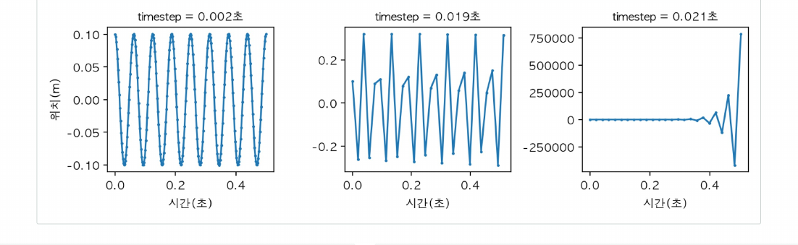

책상 위에 가만히 놓인 휴대폰의 가속도계는 위쪽으로 약 9.8m/s²를 읽습니다. 움직이지 않는데도 그렇습니다. 반대로 손에서 놓여 자유 낙하하는 동안에는 0을 읽습니다. 이번 차시는 이 “거꾸로 된 것 같은” 숫자의 정체를 다룹니다. 이어서 닿는 순간의 큰 힘, 그리고 시간 간격이 만드는 가짜 움직임까지 봅니다.
코드 블록을 내 컴퓨터에서 돌리는 방법은 예제 실행하기에 있습니다.
이 장면에서 고정한 조건
앞 차시에서 만든 상자와 팔 장면을 그대로 씁니다. 고정하는 것은 센서가 붙은 위치와 축 방향이고, 바뀌는 것은 상자가 떨어지는 중이냐 바닥에 놓였느냐입니다.
센서는 XML에 적어 달고, 이름으로 읽는다
센서는 로봇 몸에 붙이는 계기판입니다. 정할 것은 둘뿐입니다. 무엇을 잴까(태그 이름)와 어디에 붙일까(점 site 또는 joint). MuJoCo는 매 걸음 모든 센서의 값을 계산해 데이터.sensordata라는 긴 배열 하나에 XML에 적은 순서대로 이어 붙입니다.
① XML에 적기: 오너의 b16_sensors.py 장면
아래는 오너의 예제 b16_sensors.py의 장면입니다. 상자(1kg, 높이 0.4m에서 낙하)에 점 두 개를 찍고, 센서 여섯 개를 적었습니다. 점 imu는 상자 가운데이고, 점 bottom은 밑면에 붙인 납작한 상자 모양 영역(0.2×0.2×0.02m)입니다.
<site name="imu" pos="0 0 0"/>
<site name="bottom" pos="0 0 -0.05" type="box" size="0.1 0.1 0.01"/>
...
<sensor>
<accelerometer name="가속도" site="imu"/>
<gyro name="자이로" site="imu"/>
<touch name="접촉" site="bottom"/>
<framepos name="상자위치" objtype="body" objname="box"/>
<jointpos name="어깨각도" joint="shoulder"/>
<jointvel name="어깨속도" joint="shoulder"/>
</sensor>| 태그 | 붙는 곳 | 칸 수 | sensordata 칸 | 재는 것 (단위) |
|---|---|---|---|---|
accelerometer | site | 3 | 0~2 | 센서의 축으로 쓴 가속도 − 중력 (m/s²) |
gyro | site | 3 | 3~5 | 센서의 축으로 쓴 각속도 (rad/s) |
touch | site | 1 | 6 | site 영역 안에서 닿은 힘의 크기 (N) |
framepos | 몸체 이름(objtype, objname) | 3 | 7~9 | 몸체의 세계 위치 x, y, z (m) |
jointpos | joint | 1 | 10 | 관절 각도 (rad) |
jointvel | joint | 1 | 11 | 관절 각속도 (rad/s) |
② 읽기: 이름으로, 안 되면 칸 번호로
값은 두 방법으로 읽습니다. 이름으로 읽는 쪽이 안전합니다.
칸 번호는 센서를 XML에서 옮기면 바뀌기 때문입니다(가속도계와 자이로 줄을 맞바꿔 보니 자이로가 0~2칸으로 올라왔습니다).
데이터.sensor("가속도").data # 이름으로: [0. 0. 9.81]
시작 = 모델.sensor("가속도").adr[0]; 칸수 = 모델.sensor("가속도").dim[0]
데이터.sensordata[시작:시작 + 칸수] # 번호로: 같은 값
모델.nsensor, 모델.nsensordata # 센서 수 6, 전체 칸 수 12
모델.sensor_dim, 모델.sensor_adr # [3 3 1 3 1 1], [ 0 3 6 7 10 11]cd C:\code\src\robo\vol3\04-mujoco-basics
..\..\.venv\Scripts\python.exe b16_sensors.py이 컴퓨터에서 MuJoCo 3.17.0으로 돌린 실제 출력의 요점입니다(0.1초는 낙하 중, 1.0초는 바닥에 놓인 뒤).
센서 수: 6 / sensordata 길이: 12
센서별 칸 수: [3 3 1 3 1 1] / 시작 위치: [ 0 3 6 7 10 11]
--- 0.1초 ---
가속도: [0. 0. 0.]
자이로: [0. 0. 0.]
접촉: [0.]
상자위치: [0. 0. 0.35]
어깨각도: [0.17]
어깨속도: [3.47]
--- 1.0초 ---
가속도: [0. 0. 9.81]
자이로: [0. 0. 0.]
접촉: [9.81]
상자위치: [0. 0. 0.05]
어깨각도: [1.03]
어깨속도: [-7.83]③ 직접 돌려 보기: 떨어뜨리고, 기울여 보기
- 떨어지는 동안 가속도계 값은 모두 0, 접촉도 0입니다(이유는 바로 다음 절). 어깨 쪽 센서만 팔이 흔들려서 계속 변합니다.
- 닿는 순간(135걸음, 0.270초)에는 가속도계 z와 접촉이 함께 295.6까지 치솟습니다. 1kg 상자의 무게는 9.81N이니 약 30배입니다. 이 값은 같은 걸음의 한 순간이며 곧 줄어듭니다.
- 자리를 잡으면 둘 다 9.81로 돌아옵니다. 가만히 있는데 0이 아닌 까닭은 바닥이 상자를 떠받치기 때문입니다.
- 20° 기울여 떨어뜨리면 모서리가 먼저 닿고(128걸음) 상자가 돌기 시작해서, 그 직후부터 자이로 y가 0이 아닙니다(133걸음에 −9.5 rad/s, 142걸음에 최대 15.1 rad/s). 평평하게 떨어뜨릴 때는 자이로가 끝까지 0입니다. 이때 접촉(touch)과 가속도계 x 성분도 0이 아닙니다.
- 가만히 기울여 두기에서는 상자가 움직이지 않아도 가속도계가 값을 냅니다. 센서 자기 축으로 쓴 “중력의 반대 방향”을 읽으므로 크기는 늘 9.81이고, 각도에 따라 x와 z로 나뉩니다. 0°에서 [0, 0, 9.81], 90°에서 [−9.81, 0, 0], 180°에서 [0, 0, −9.81]입니다. 세계 좌표 기준이 아니라 센서가 보는 축 기준이라는 점이 핵심입니다.
touch는 그 점(영역) 안에서 일어난 접촉만 더합니다. 같은 상자의 윗면에 작은 점을 찍어 touch를 달면 상자가 바닥에 놓여 있어도 0이고, 닿는 밑면의 납작한 영역(bottom)에 달아야 9.81이 나옵니다.
④ 한 걸음 늦게 읽는 함정: mj_step 직후 sensordata는 한 걸음 전 값
mj_step은 맨 앞에서 센서를 계산하고 그다음에 시간을 진행합니다. 그래서 step 직후에 읽은 센서값은 한 걸음(0.002초) 전 상태의 값입니다.
1.0초에 어깨 각도를 step 직후에 읽으면 1.035rad/−7.829rad/s이고, mujoco.mj_forward(모델, 데이터)를 한 번 부른 뒤에 읽으면 1.019rad/−7.793rad/s입니다(교안 표의 1.03과 −7.83은 step 직후에 읽은 값입니다).
몇 걸음 늦은 값이어도 상관없을 때는 괜찮지만, 센서값과 qpos를 같은 순간으로 맞춰야 한다면 forward를 부르십시오.
⑤ 자이로로 자세를 쌓아 확인하기 (b17_gyro_check.py)
자이로는 각속도(rad/s)를 줍니다. 한 걸음 동안 돈 회전은 각속도 × 0.002초이고, 이 작은 회전을 쿼터니언 δq = [cos(|ω|·dt/2), sin(|ω|·dt/2)·ω/|ω|]로 바꿔 자세에 차례로 곱해 가면(q ← q ⊗ δq) 자세가 쌓입니다.
그 결과를 MuJoCo가 알고 있는 참 자세 xquat와 비교하면 센서를 믿어도 되는지 잴 수 있습니다. 중력 0에서 길쭉한 상자를 비스듬히 던져 10초(5000걸음) 동안 뒤뚱거리게 하고 두 방식으로 쌓습니다.
cd C:\code\src\robo\vol3\04-mujoco-basics
..\..\.venv\Scripts\python.exe b17_gyro_check.py걸음 전 자이로로 쌓은 자세 vs MuJoCo xquat: 0.47769도
걸음 뒤 자이로로 쌓은 자세 vs MuJoCo xquat: 0.00000도
10초 뒤 자이로 값: [ 2.056 -3.229 2.091]결과는 “어느 순간의 각속도를 쓰느냐”가 전부입니다. 걸음을 시작하기 전의 자이로 값을 쓰면 10초 뒤에 0.48° 어긋나고, 걸음을 끝낸 뒤 mj_forward로 센서를 다시 계산해 그 값을 쓰면 0.00000°로 맞습니다.
이 장면에서는 각속도가 걸음마다 변하는데, MuJoCo는 한 걸음에서 속도를 먼저 새로 계산한 다음 그 새 속도로 자세를 돌리기 때문입니다. 위 “한 걸음 늦게 읽는 함정”과 같은 이야기입니다.
센서를 적을 때 자주 만나는 오류 문장 (모두 직접 낸 것)
| 이렇게 적으면 | MuJoCo의 말 |
|---|---|
<accelerometer name="a" site="nosuch"/> (없는 site) | Error: unrecognized name 'nosuch' of sensorized object |
<accelerometer name="a" joint="x"/> (가속도계는 site에만) | XML Error: Schema violation: unrecognized attribute: 'joint' |
<accelerometer name="a"/> (붙일 곳 빠짐) | XML Error: required attribute missing: 'site' |
<jointpos name="a" site="imu"/> (jointpos는 joint에만) | XML Error: Schema violation: unrecognized attribute: 'site' |
| 같은 이름을 두 번 적음 | XML Error: Error: repeated name 'a' in sensor |
읽을 때 데이터.sensor("nosuch") | KeyError: Invalid name 'nosuch'. Valid names: ['a'] (가진 센서 이름을 알려 줍니다) |
오류 문장은 줄 번호(line 1 같은 부분)도 함께 줍니다. 읽는 법은 XML은 이렇게 읽습니다에 있습니다.
다음 절은 같은 센서 중 가속도계가 왜 떨어질 때 0이고 가만히 있을 때 9.81을 읽는지를 식으로 풉니다. 접촉 센서와 다른, 접촉 목록을 읽는 방법은 그다음 절에 있습니다.
떨어지는 가속도계가 0을 읽는 이유

엘리베이터가 통째로 자유 낙하하면 바닥이 발을 떠받치지 못해 몸이 붕 뜹니다. 가속도계도 이 “몸을 밀어 주는 효과”를 읽습니다. 세계에서 보면 낙하 가속도는 아래로 −9.81m/s²이지만, 이상적인 자유 낙하 가속도계는 0을 읽습니다. 가속도계가 읽는 고유가속도는 중력만으로 떨어지는 운동을 뺀 값입니다.
자유 낙하: (−9.81) − (−9.81) = 0
바닥에 정지: 0 − (−9.81) = +9.81 m/s²
여기서 g는 중력가속도 벡터 −9.81m/s²(아래 방향), a는 세계에서 본 그 물체의 가속도입니다. 책상에 놓인 공은 가속도가 0이지만 바닥이 위로 떠받치고 있으므로 센서는 +9.81을 읽습니다. 식의 부호가 헷갈리면 “센서는 중력을 뺀 나머지 힘을 잰다”는 문장으로 돌아오십시오.
실제 센서는 자기 좌표계의 축으로 읽으므로, 센서를 뒤집으면 부호가 바뀝니다. “언제나 z에 +9.81”이 아니라 이 예제에서 센서의 위쪽 축이 +z라는 조건이 붙어 있는 것입니다. 이 구분이 없으면 로봇이 기울었을 때 값을 잘못 해석합니다.
| 교안 시각 | 가속도계 | 자이로 | 접촉 센서 | 상자 위치 |
|---|---|---|---|---|
| 0.1s, 낙하 중 | [0,0,0] m/s² | [0,0,0] rad/s | 0N | [0,0,0.35]m |
| 1.0s, 바닥 | [0,0,9.81] | [0,0,0] | 9.81N | [0,0,0.05]m |
같은 순간에 기록한 어깨 관절 센서는 0.1초에 0.17rad와 3.47rad/s, 1초에 1.03rad와 −7.83rad/s입니다. 자이로가 0인 상자와, 흔들리는 팔의 관절 센서는 서로 다른 대상을 읽고 있습니다. 센서 이름을 볼 때 어느 물체의 어느 축인지를 함께 봐야 하는 이유입니다.
mujoco.mj_forward(모델, 데이터)
센서 = 모델.sensor("accel")
시작 = 센서.adr[0]
칸수 = 센서.dim[0]
값 = 데이터.sensordata[시작:시작 + 칸수]설명용 이름 accel은 실제 XML의 센서 이름으로 바꿔야 합니다. 센서 결과는 sensordata라는 긴 배열 하나에 이어 붙으므로, 이름으로 시작 주소와 칸 수를 찾아 읽습니다. 센서마다 출력 크기가 다르기 때문에 qpos처럼 “관절마다 한 칸”으로 가정하면 안 됩니다.
가만히 놓인 휴대폰의 센서가 9.8이라면 고장일까?
닿는 순간의 힘은 무게보다 클 수 있다
상자를 천천히 들고 있을 때와, 떨어지는 상자를 손으로 받는 순간은 다릅니다. 받는 순간에는 아래로 움직이던 속도를 짧은 시간 안에 멈춰야 해서 큰 힘이 필요합니다. 시뮬레이터에서도 접촉 목록을 직접 읽으면 이 순간을 잡을 수 있습니다.
교안은 질량 2kg 상자의 중심을 높이 0.3m에 둡니다. 상자 반 높이가 0.05m이므로 밑면이 바닥에 닿기까지 중심이 떨어질 거리는 0.25m입니다. 낙하 시간은 √(2×0.25/9.81)≈0.226초입니다. 중심이 0까지 떨어질 때를 접촉 시각으로 계산하면 틀립니다. 몸체의 위치는 중심 좌표이고, 접촉은 밑면에서 일어납니다.
for i in range(데이터.ncon):
접촉 = 데이터.contact[i]
mujoco.mj_contactForce(모델, 데이터, i, 힘)
법선힘_합 += 힘[0]ncon은 현재 계산된 접촉 개수이고, contact[i]에는 접촉한 geom 두 개, 접촉 위치, 거리, 접촉 좌표계가 담깁니다. 미리 6칸 배열로 만든 힘에 contactForce가 힘 3개와 토크 3개를 넣습니다. 힘[0]은 접촉 좌표계의 법선 방향 힘입니다. 평평한 바닥인 이 예제에서는 법선이 위쪽이라 수직력으로 합산할 수 있지만, 경사면에서도 무조건 세계 z방향 힘이라고 읽지는 않습니다.
| 교안 관찰 | 읽는 법 |
|---|---|
| 처음 기록 0.228s, 접촉 4개 | 상자 바닥 네 모서리에서 접촉 |
| dist=−0.0027m | 겹침/침투 깊이가 약 2.7mm인 상태에서 접촉이 기록됨 |
| 최대 수직력 약 494N | 무게 19.62N의 약 25배인 충격 순간 |
| 1초 뒤 힘 합 19.620N | 정지 후에는 무게 mg=2×9.81과 균형 |
원본 루프는 step 직후 contact를 읽고 현재 time을 붙입니다. 그래서 0.228초라는 표시에는 시간 차이가 섞여 있습니다. 앞 차시에서 본 것처럼 step 직후의 계산 필드는 걸음을 시작할 때 값이고 time은 이미 진행된 값이기 때문입니다.
이산 시간 간격 때문에 이론의 0.226초와도 차이가 납니다. 최신 qpos와 접촉을 맞춰 읽으려면 forward를 부르되, 그러면 원본 교안과 기록 절차가 달라졌다는 점을 함께 적어야 합니다.
충격력이 25배면 정지한 뒤에도 무게가 25배가 될까?
너무 큰 걸음으로 계산하면 숫자가 폭주한다

좁은 징검다리를 큰 보폭으로 건너면 다음 돌을 지나칩니다. 빠르게 흔들리는 용수철도 큰 시간 간격으로 계산하면 움직임을 놓치고, 없는 에너지가 늘어나는 듯한 수치 불안정이 나타납니다. 이것은 물리 현상이 아니라 계산이 무너진 것입니다.
교안 단순 진동 예: ω=100 rad/s → T≈0.0628s, 2/ω=0.020s
ω는 진동의 각속도 척도, k는 용수철 강성, m은 질량입니다. 이 단순 선형 진동의 반암시적 오일러에서는 Δtω<2가 안정성의 기준입니다. ω=100이면 2/ω=0.020초가 경계가 되고, 실제 표에서도 0.019초와 0.021초 사이에서 결과가 갈립니다. 다만 이것을 접촉이 많은 복잡한 로봇 전체에 그대로 적용하는 보편 공식으로 쓰지는 않습니다.
| Δt | 0.5초 동안 최대 거리, 교안 | 해석 |
|---|---|---|
| 0.002s | 0.101m | 이 예제에서 안정적 |
| 0.019s | 0.32m | 경계 가까이에서 오차가 큼 |
| 0.021s | 7.86×105m | 계산 폭주, 현실 운동으로 읽으면 안 됨 |
적분법을 바꾼 실험도 있습니다. 감쇠가 큰 별도 예제(kv=300)에서 Euler와 RK4는 불안정 경고가 1번씩, implicitfast는 0번이었습니다. 2초 뒤 위치는 각각 0.0000m, 0.0000m, 0.0487m입니다. 여기서 경고 뒤에 0으로 출력된 값을 “정확히 원점에 수렴했다”라고 읽지 마십시오. 시뮬레이터가 불안정 상태를 재설정했을 가능성을 경고와 함께 읽어야 합니다.
“정확도가 높은 적분법”과 “지금처럼 강한 감쇠가 있는 문제에 안정적인 적분법”은 같은 말이 아닙니다. 기본 0.002초에서 시작해 간격을 키워 가며 비교하고, 강한 감쇠나 센 액추에이터가 있는 장면에서는 implicitfast 같은 방법을 검토합니다. 어떤 방법도 큰 간격을 안전하게 만드는 마법은 아닙니다.
0.021초 결과에서 팔이 수백 km 움직였다고 보고해야 할까?
따라 해 보기 (선택): 센서 부호와 폭주 구분
첫 문제는 부호 계산입니다. 센서 축은 그대로 두고 세로 가속도만 바뀌는 상황이니, f=a−g에 각각 어떤 값이 들어가는지 적어 보십시오.
두 번째는 숫자가 이상할 때의 조사 순서를 묻습니다. 이 차시에서 가장 자주 되돌아올 판단입니다.
손계산을 하나 더 해 보려면: 질량 2kg 상자가 정지해 있을 때 지지력 합은 19.62N입니다. 충돌 순간의 494N과 왜 다른지 “속도를 멈추는 데 걸린 시간”으로 설명해 보십시오.
내 컴퓨터에서 돌려 보기
아래 출력은 이 컴퓨터(MuJoCo 3.17.0)에서 오너의 예제를 직접 돌려 얻은 값입니다. 명령은 줄 두 개(폴더로 이동 + 실행)이고 예제 실행하기에 이유가 있습니다. 그림 파일을 저장하는 예제는 예제 폴더에 PNG가 생기지 않도록 임시 폴더(cd $env:TEMP)에서 전체 경로로 돌립니다.
접촉 목록 한 줄 뜯어보기 (교안 40쪽)
데이터.contact[i] 하나가 접촉 하나입니다. 숫자로 무엇이 들어 있는지 오너의 b18_contacts.py로 확인합니다.
| 필드 | 뜻 | 이 장면의 값 |
|---|---|---|
geom1, geom2 | 닿은 두 geom의 번호. mj_id2name으로 이름을 얻음 | floor, box_geom (번호 0-1) |
pos | 접촉 위치(세계 좌표) | 상자 바닥 네 모서리 |
dist | 두 면 사이 거리. 음수면 겹친 깊이 | −0.0027m |
frame[:3] | 접촉의 법선 방향 | (0, 0, 1) 위쪽 |
dim | 이 접촉이 쓰는 힘 성분 수. 3은 법선 하나와 미끄럼 두 방향 | 3 |
friction | 마찰 5칸: 미끄럼 둘, 비틀림, 구름 둘 | [1, 1, 0.005, 0.0001, 0.0001] |
mj_contactForce의 결과 | 접촉 좌표계의 힘 3개와 토크 3개. 첫 칸이 법선(수직) 방향 힘 | 첫 접촉에서 123.6N |
cd $env:TEMP
C:\code\src\robo\.venv\Scripts\python.exe C:\code\src\robo\vol3\04-mujoco-basics\b18_contacts.py처음 닿은 시각 0.228초, 접촉 수 4
floor-box_geom: 위치 [-0.1 -0.1 -0.001], 거리 -0.0027m, 법선 [0. 0. 1.]
floor-box_geom: 위치 [ 0.1 -0.1 -0.001], 거리 -0.0027m, 법선 [0. 0. 1.]
floor-box_geom: 위치 [-0.1 0.1 -0.001], 거리 -0.0027m, 법선 [0. 0. 1.]
floor-box_geom: 위치 [ 0.1 0.1 -0.001], 거리 -0.0027m, 법선 [0. 0. 1.]
가장 큰 수직력 494N (0.228초), 무게의 25배
1초 뒤 접촉 수 4, 수직력 합 19.620N, 무게 mg = 19.620N
저장: impact.png읽을 곳: 23~30행의 while 루프가 처음 닿은 순간의 접촉을 출력하고(25~30행), 32~34행이 접촉마다 mj_contactForce를 불러 법선 힘을 더합니다. 네 모서리 접촉이 각각 123.6N씩이라 합이 494N(= 4 × 123.6)이고, 이것이 무게 19.62N의 25배입니다.
위 표의 dim·friction·힘 칸은 30행 아래에 print(c.dim, c.friction, c.geom1, c.geom2)와 첫 접촉의 힘 출력을 더해 돌린 값입니다(출력 예: dim 3, 마찰 [1.e+00 1.e+00 5.e-03 1.e-04 1.e-04], geom 번호 0-1 / 첫 접촉 힘(접촉 좌표계) [123.6 0. 0. 0. 0. 0. ]).
시간 간격과 적분법 고르기 (교안 41쪽)
계산이 폭주하면 레버는 셋입니다. ① 시간 간격을 줄인다, ② 적분법을 implicitfast로 바꾼다, ③ 감쇠(kv)나 강성을 낮춘다. 오너의 b19_timestep.py가 ①의 한계를, b20_integrators.py가 ②를 보여 줍니다.
cd $env:TEMP
C:\code\src\robo\.venv\Scripts\python.exe C:\code\src\robo\vol3\04-mujoco-basics\b19_timestep.py한 번 떠는 시간: 0.0628초, 2/ω = 0.020초
timestep 0.002: 0.5초 동안 가장 멀리 0.101m
timestep 0.019: 0.5초 동안 가장 멀리 0.32m
timestep 0.021: 0.5초 동안 가장 멀리 7.86e+05m읽을 곳: 21행이 ω = √(k/m) = 100rad/s에서 2/ω = 0.020초를 계산하고, 24~33행이 간격 0.002·0.019·0.021초로 0.5초를 돌립니다. 0.019는 경계 근처라 0.32m, 0.021은 7.86×105m로 폭주합니다.
cd C:\code\src\robo\vol3\04-mujoco-basics
..\..\.venv\Scripts\python.exe b20_integrators.pykv= 20, Euler : 2초 뒤 위치 0.1000m, 불안정 경고 0번
kv= 20, implicitfast: 2초 뒤 위치 0.1000m, 불안정 경고 0번
kv= 20, RK4 : 2초 뒤 위치 0.1000m, 불안정 경고 0번
kv=300, Euler : 2초 뒤 위치 0.0000m, 불안정 경고 1번
kv=300, implicitfast: 2초 뒤 위치 0.0487m, 불안정 경고 0번
kv=300, RK4 : 2초 뒤 위치 0.0000m, 불안정 경고 1번읽을 곳: 6행의 timestep="0.01" integrator="{적분기}"가 간격 0.01초에 적분법을 바꿔 가며 돌립니다.
kv=300 줄에서 Euler와 RK4는 불안정 경고가 1번씩 나와 0.0000m로 끝나고(터미널에는 WARNING: Nan, Inf or huge value in QACC at DOF 0. The simulation is unstable. 경고가 두 번 찍힙니다. 같은 경고는 실행한 폴더의 MUJOCO_LOG.TXT에도 시각과 함께 쌓입니다. 이 컴퓨터의 임시 폴더에서 b20을 돌려 두 줄이 기록된 것을 확인했으니, 오너의 예제 폴더에 파일이 생기지 않게 임시 폴더에서 돌리세요), implicitfast만 경고 없이 0.0487m로 끝납니다.
세 번째 레버를 직접 확인. 같은 파일의 6행에서 timestep="0.01"을 "0.002"로만 바꾸어 돌리면 세 적분법이 모두 안정입니다.
kv= 20, Euler : 2초 뒤 위치 0.1000m, 불안정 경고 0번
kv= 20, implicitfast: 2초 뒤 위치 0.1000m, 불안정 경고 0번
kv= 20, RK4 : 2초 뒤 위치 0.1000m, 불안정 경고 0번
kv=300, Euler : 2초 뒤 위치 0.0487m, 불안정 경고 0번
kv=300, implicitfast: 2초 뒤 위치 0.0487m, 불안정 경고 0번
kv=300, RK4 : 2초 뒤 위치 0.0486m, 불안정 경고 0번그래서 간격 0.01초의 Euler·RK4가 낸 0.0000m는 “원점에 수렴”이 아니라 불안정이 낸 값이었고, 진짜 값은 0.0487m 근처입니다. 간격을 5배 줄이면 계산이 5배 늘어납니다. implicitfast는 간격 0.01초 그대로 같은 답을 줍니다.
얼마나 빠르게 도는가 (교과서 4.9절)
시뮬레이션 시간을 계산에 걸린 실제 시간으로 나눈 값이 “실시간의 몇 배”입니다. 오너의 b21_speed.py가 5000걸음(= 시뮬레이션 10초)을 time.perf_counter로 재서 둘로 비교합니다.
cd C:\code\src\robo\vol3\04-mujoco-basics
..\..\.venv\Scripts\python.exe b21_speed.py진자 하나 : 실제 시간의 약 1,430배
상자 20개 쏟기 : 실제 시간의 약 45배읽을 곳: 6~13행의 함수가 걸음 수만큼 mj_step을 부르고 데이터.time ÷ (끝 시각 − 시작 시각)을 돌려줍니다. 진자 하나는 접촉이 없어 약 1,400배, 상자 20개가 쏟아지는 장면은 접촉이 많아 약 45배입니다.
이 값은 실행할 때마다, 컴퓨터마다 달라집니다(이 컴퓨터에서 세 번 돌려 진자 1,408~1,451배, 상자 44~47배). 의미는 “접촉이 늘면 같은 0.002초 걸음이 비싸진다”는 것입니다.
수업 근거/원문 보기
센서 표와 충격 수치는 교안에도 있는 값이고, 아래 ‘내 컴퓨터에서 돌려 보기’의 b16~b21을 이 컴퓨터에서 돌려 같은 값을 확인했습니다. f=a−g는 회전하지 않는 단순 축 예로 쓴 설명이며, 실제 장면은 센서 좌표계를 따릅니다.
- 교안 10차시: 59쪽 · 60쪽 · 61쪽
- 교과서: PDF 179쪽 · PDF 192쪽 · 4.7~4.9절 원고
- 예제(오너 폴더
C:\code\src\robo\vol3\04-mujoco-basics\): b16_sensors.py, b18_contacts.py, b19_timestep.py, b20_integrators.py (이 컴퓨터에서 실행해 확인)